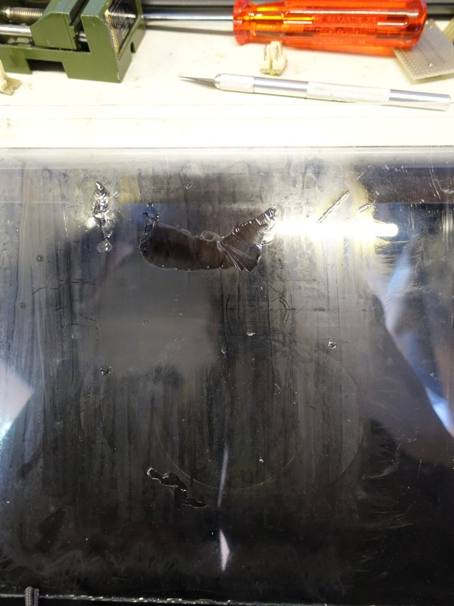

Hier is een rendering van het design:

Het ontwerp is gebaseerd voor toepassing van smalle (5cm tussen ruimte) radiatoren zoals ik die in huis heb. Voor de modernere
breede varianten kan het design ook gebruikt worden maar valt de ventialor al bijna geheel tussen de platen. Ik heb 8cm ventilatoren toegepast niet te klein want die maken snel teveel herrie en niet te groot om te kunnen gebruiken. Een ventialor krijgt een microcontroller
die besluit of de ventilator moet draaien of niet en de rest van de ventilatoren kan parallel aangesloten worden. Typisch heb ik 4 ventilatoren per radiator nodig maar dat ligt niet vast.
Voor het 3D printen heb ik gebruik gemaakt van ColorFabb XT. Het voordeel is dat het iets beter tegen een wat hogere temperatuur kan (75 graden) dan PLA (50 graden). Het materiaal kript weinig tijdens het printen in tegen stelling tot b.v. ABS. En het is bijna reukloos tijdens het printen. Ik vind het wel iets lastiger te printen dan PLA het druipt iets meer en de hechting wil soms ook nog wel eens een probleem zijn. Ik heb daarom alles met een brim geprint voor goede hechting. Dit is het resultaat als je alle onderdelen in een keer print:

Duidelijk zichtbaar zijn de onregelmatig heden op de kap. Dit komt omdat de want nogal dun is en dus makkelijk heen en weer kan gaan tijdens het printen. Daar ook het bakje geprint word moet de kop steeds heen en weer gaan van de een naar de ander en moet het materiaal steeds weer op gang komen. Doordat de ondergrond van de kap heen weer kan gaan krijg je de onregelmatigheden. Dit is redelijk te bestrijden om alleen de kap te printen en niet het bakje tergelijkertijd. Maar dat is meer prints starten en stoppen het is maar wat je wil. Ik monteer de onregelmatige kant naar de muur toe en dan zie je er toch weinig van. Tja de hechting is soms ook wel eens te goed mijn glasplaat heeft het begeven tijdens deze printen:

Voorde aansturing heb ik een microcontroller van Atmel gebruikt de AT-mega8. Dit is een processor die ik bijna voor al mijn projecten gebruik. Lekker compact maar toch nog redelijk wat aansluitingen. In principe zou ook een Arduino micro gebruikt kunnen worden maar dat is wel duurder dan de losse processor gebruiken. Ik heb ook niet de standaard 10 pin programmer interface aangelegd ik heb een 28 pins clip die ik op de chip click en dan programmeren maar. Het schema is vrij eenvoudig een spannings regulator 5V, micro controller, 2 instel potmetertjes (een voor de temperatuur voor instelling en een voor de fan snelheid instelling) en twee ntc weerstanden. Ik maak gebruik van 2 ntc weerstanden zodat het verschil gemeten kan worden tussen de verwarming en de omgeving. Daarmee is het mogelijk om met een paar graden temperatuur verschil te kunnen inschakelen zonder dat de omgevings temperatuur dit sterk beinvloed. Dus de warme sensor bij de inlaat van de radiator en de koude sensor ergens onderaan de raditor in de lucht laten hangen. Ik had eerst de koude sensor op de retour leiding geplaatst maar dat werkt minder goed in het geval dat er niet veel warmte overdracht is.
Terug